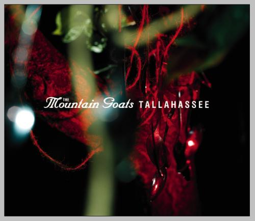

tallahassee

title: tallahassee
company: 4AD
chords: none yet.
liner notes:
I stroll the yard,
my keen convicted mind
wondering if the fence to freedom
will really deliver 30,000 volts.
Jimmy A. Lerner
We came into town under cover of night, because we
were pretty sure the people here were going to hate us
once they really got to know us. In our lives together, which
are sweet in the way of rotting things, it is somehow
permanently summer.
THE MOON rose above the trees, older than time,
greener than money. You hung your head out the window
of our dusty lemon-yellow El Camino and howled, and I
turned up the radio, because the sound of your voice was
already beginning to get to me. The speakers crackled
and the music came through: Frankie Valli and the Four
Seasons. Pretty as a midsummer's morn, they call her
Dawn. Let the love of God come and get is if it wants
us so bad. We know were we are going when all of
this is done.
SOME PEOPLE MIGHT SAY that buying a house you've
never actually seen close-up is a bad idea, but what does
anybody know about our needs, anyhow? For us it was
perfect. The peeling paint. The old cellar. The garden in
the back. The porch out front. The still air of the living
room. The attic. Everywhere entirely unfurnished and
doomed to remain largely so, save for our own meager
offerings: a cheap sofa, an old mattress, a couple of chairs
and some ashtrays. Maybe a table salvaged from some diner
gone into bankruptcy, I don't remember. Neither do you.
We drank store-brand gin with fresh lime juice out of plastic
cups or straight from the bottle and we spread ourselves out
face-up on the wooden floors. An aerial view of us might
have suggested that we'd been knocked out, but what we were
doing was staking our claim. Establishing our territories.
Making good. Not on the vows we'd made but on the ones
we'd really meant. You produced a wallet-sized transistor
radio out of nowhere and you found a sympathetic station:
somebody was playing Howlin' Wolf. Smokestack lightning.
O yes, I loved you once. O yes, you loved me more. We entered
our new house like a virus entering its host. You following
me, me following you. However you like. The windows were
high and the walls were thick and sturdy. It was hot as blazes.
The guts of summer. Always down in the sugar-deep barrel-
bottom belly of summer itself. Always. In our shared walk
down to the bottom, which bottom we will surely find if only
our hearts are brave and our love true enough, we have found
that it is somehow invariably and quite permanently summer.
Leading cases are the stuff of which
the common law is made, and no leading
case in the common law is better known
than that of Regina v. Dudley and
Stephens. It was decided in 1884 by a
court in the Royal Courts of Justice in
London. In it, two profoundly respectable
seamen, Captain Tom Dudley and Mate Edwin
Stephens, lately of the yacht Mignonette,
were sentenced to death for murder of
their shipmate, Ordinary Seaman Richard
Parker, after a bench of five judges had
ruled that one must not kill one's ship-
mates in order to eat them, however
hungry one might be.
A.W. Brian Simpson,
Cannibalism and the Common Law
songs:
tallahassee
first few desperate hours
southwood plantation road
game shows touch our lives
the house the dripped blood
idylls of the king
no children
see america right
peacocks
international small arms traffic blues
have to explode
old college try
oceanographer's choice
alpha rats nest
please mail any questions/comments/complaints, or just notes hello to:nall@themountaingoats.net